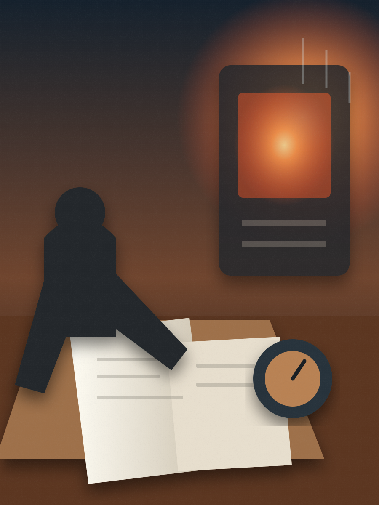
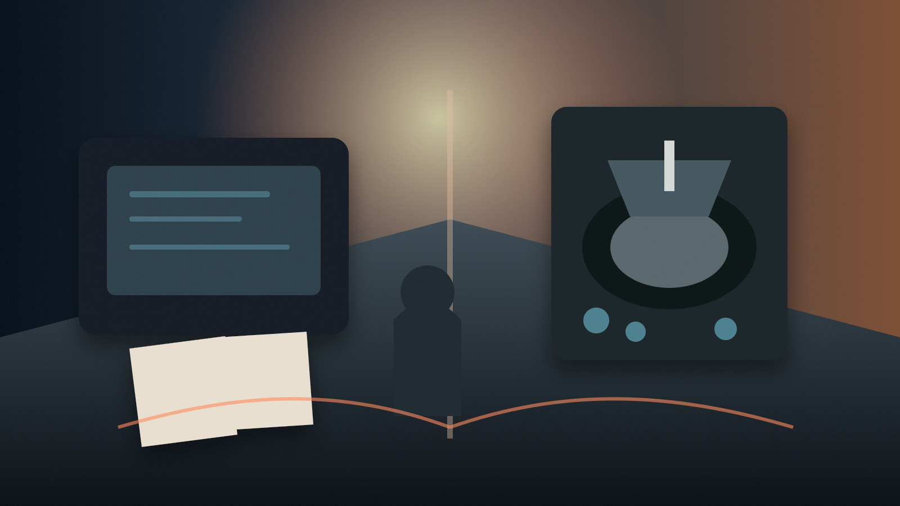
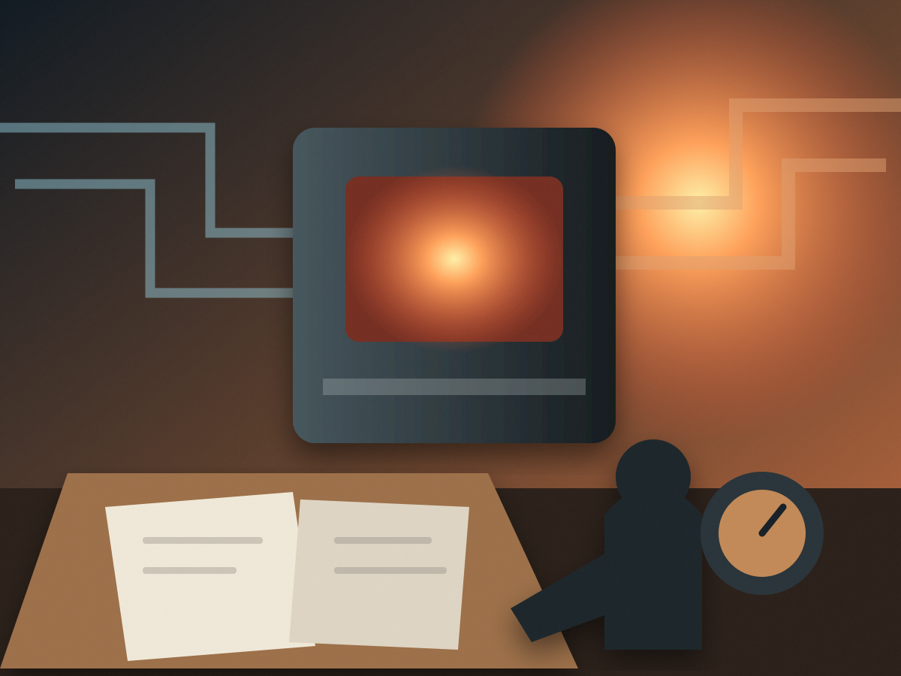
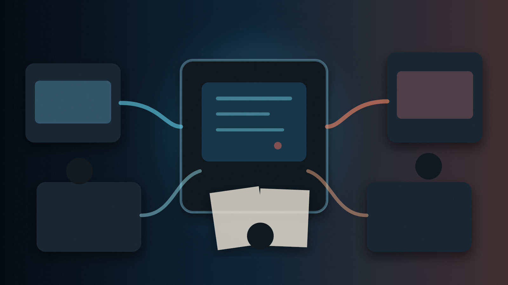
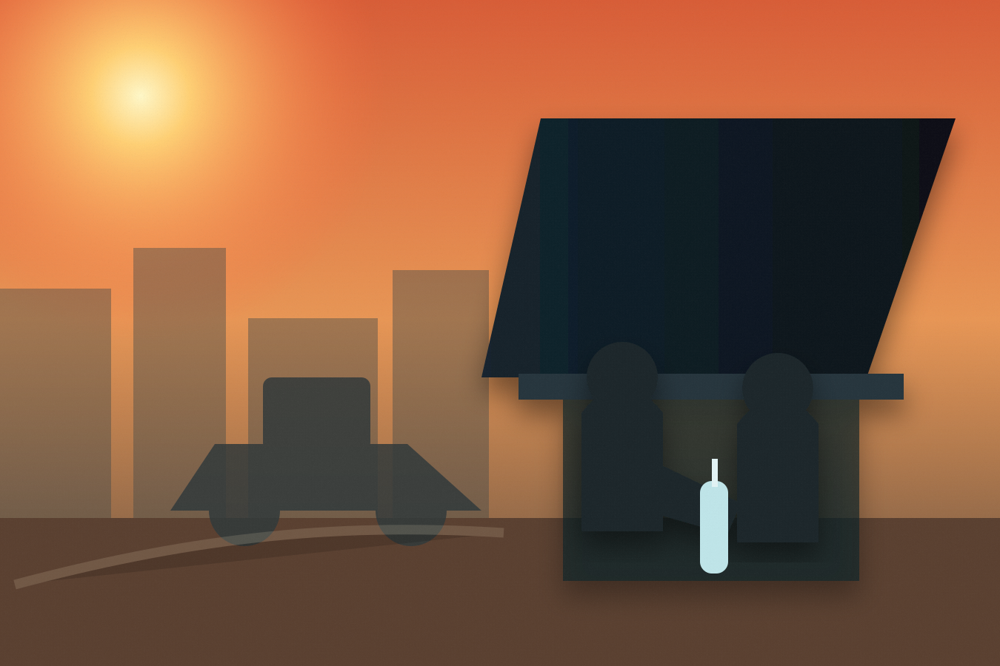
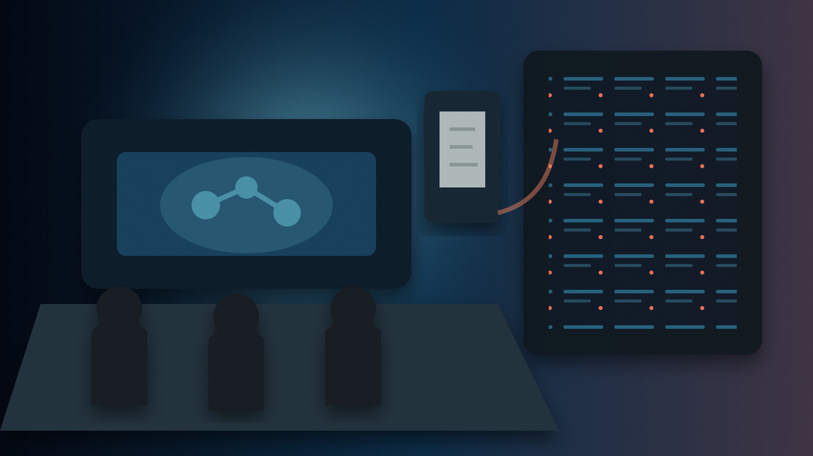

보이스피싱 정보공유 시행
- 현재 상태
- 8월 4일 시행 예정
- 발표 주체
- 금융위원회·관계기관
- 확인 문서
- 지정기관, 참여기관, 개인정보 처리 기준
- 판단 기준
- 정보 항목·보유·파기·조회·정정 절차가 공개되는가
- 공식 링크
- 특별법 개정문
국가 R&D 예타 폐지, 에너지 비용 연동, 보이스피싱 정보공유와 국민 AI 평가. 빨라지고 연결된 제도에서 판단 기록과 수정 책임이 어디로 이동하는지 추적한다.
Issue Guide
지난주의 여섯 꼭지와 다섯 보조 지면.

Life Scene
소규모 금속가공 수급사업자의 관리자는 지난달 전력 사용량과 이번 납품계약의 원가표를 나란히 놓는다.
그가 먼저 확인할 것은 전기요금이 올랐다는 사실이 아니다. 이번 계약에서 에너지 비용 비중이 법이 정한 주요 에너지 기준에 해당하는지, 계약서에 어떤 지표를 쓰기로 했는지, 어느 폭의 변화가 생기면 언제 대금을 다시 계산하는지다.
기준을 충족해도 대금은 저절로 바뀌지 않는다. 계약서에는 연동 대상, 기준지표, 조정요건, 조정주기와 산식이 있어야 한다. 지표가 내려가면 같은 산식이 하락 조정에도 적용될 수 있다.
이 장면에서 바뀌는 것은 전기요금 자체가 아니다. 이전에는 납품 뒤 협상해야 했던 비용 변화를 계약 전에 문장과 산식으로 정하는 일이다.
Editor's Pick
이번 주의 변화는 절차를 줄이거나 기관 사이의 벽을 낮추는 데 집중됐다. 속도가 빨라질수록 중요한 것은 사라진 관문이 아니라, 다음 판단이 어느 문서에 누구의 책임으로 남는가다.
국가 연구개발사업은 일반 예비타당성조사에서 빠진다. 대형 비구축형 사업은 사업계획서와 예산 배분·조정으로, 시설·장비 중심 구축형 사업은 사업추진심사로 이동한다. 사업 목표와 총사업비가 바뀔 때 이전 계획과 비교할 기록이 남는지를 봐야 한다.
보이스피싱 대응에서는 금융·통신·수사기관의 의심정보가 연결된다. 그러나 분석 결과와 지급정지·수사·환급 결정은 서로 다른 권한이다. 잘못된 의심정보가 정상 계좌를 막았을 때 누가 근거를 설명하고 수정하는지가 속도만큼 중요하다.
하도급대금의 주요 에너지 연동과 독자 AI 모델의 국민평가도 같은 질문을 만든다. 참여와 비용 조정의 문은 넓어지지만, 산식과 평가표가 실제 결정에 어떻게 쓰였는지 공개돼야 한다.
Cover Story · Research Governance
2026년 8월 11일부터 국가연구개발사업은 일반 예비타당성조사 대상에서 제외된다. 대형 사업의 점검은 비구축형 사업계획서와 구축형 사업추진심사로 갈라진다.

정부는 7월 28일 국무회의에서 국가재정법 시행령 개정안을 의결했다. 개정 국가재정법은 국가연구개발사업을 일반 예비타당성조사 대상에서 제외한다. 시행일은 8월 11일이다.
예비타당성조사는 대규모 재정사업을 예산에 반영하기 전 경제성·정책성·기술성을 검토하는 사전 관문이었다. 연구개발은 기술 변화가 빠르고 성공 가능성을 수익성으로 계산하기 어렵다는 지적을 받아 왔다. 반대로 총사업비가 큰 장기사업을 부처 계획만으로 시작하면 비용 증가와 목표 변경을 통제하기 어렵다는 우려도 있었다.
과학기술기본법 제12조의2는 총사업비 1,000억 원 이상이고 국가 재정지원 500억 원 이상인 신규 국가연구개발사업의 사업계획서를 중앙행정기관이 매년 10월 31일까지 과학기술정보통신부와 기획예산처에 제출하도록 한다. 연구시설·장비와 연구공간을 짓는 구축형 사업은 별도 경로다.
같은 법 제12조의3은 구축형 연구개발사업에 사업추진심사를 둔다. 시설·장비를 구축하거나 획득하는 사업, 연구단지·시설·우주 기반시설 등이 포함된다. 금액 기준은 같다.
KISTEP의 2026년 사업실명제 문서는 진행 중인 국가연구개발사업 예비타당성조사를 계속 수행하면서 새 구축형 사업의 전주기 심사도 함께 운영한다고 적고 있다. 기존 예타에 들어간 사업과 새 절차 적용 사업이 동시에 존재한다.
진행 중 예타를 끝까지 수행할지, 새 절차로 전환할지, 이미 조사한 비용·수요·중복성 자료를 어떻게 승계할지가 전환기의 핵심이다.
비구축형인지 시설·장비·연구공간 중심 구축형인지 먼저 구분한다.
사업계획서와 예산 배분·조정 또는 구축형 사업추진심사로 이동한다.
예타 미실시 사업의 총사업비 등 정보가 예산안 첨부서류로 제출된다.
목표 변경, 예산 증액, 장비 가동과 중단 판단을 사업기간 동안 추적한다.
연구개발은 결과가 불확실하므로 시작 단계의 단일 합격·불합격 판단만으로 관리하기 어렵다. 새 체계가 속도를 살리려면 사업 시작 뒤에도 중간목표, 예산 증액, 기술환경 변화와 중단 기준을 기록해야 한다.
특히 구축형 사업은 건물이나 장비를 완성하는 것과 연구 성과를 만드는 것이 다르다. 운영 인력과 유지비, 공동활용률, 기존 시설과의 중복이 사업기간 전체에서 공개돼야 한다.
구축형 연구개발사업의 세부 유형과 사업추진심사 운영 기준, 2027년도 예산안의 예타 미실시 R&D 첨부서류, 진행 중 예타 사업의 전환 목록을 확인해야 한다.
Economy · Contract Cost
2026년 8월 11일부터 하도급대금 연동 대상이 주요 원재료뿐 아니라 주요 에너지까지 확대된다. 비용 비중, 서면 약정, 지표와 산식이 먼저 정해져야 한다.

개정 하도급법은 하도급대금 연동 대상을 주요 원재료에서 주요 에너지로 넓힌다. 제조·가공 과정에서 전기, 가스, 유류 같은 에너지 비용 변화가 수급사업자에게 집중되는 문제를 계약 단계에서 나누려는 장치다.
법은 하도급대금에서 에너지 비용이 차지하는 비중이 10% 이상인 경우를 주요 에너지로 본다. 이 기준은 에너지 가격 상승률이 아니라 해당 계약의 원가 구성 비중이다.
원사업자와 수급사업자는 계약서에 연동 대상 에너지, 기준 가격지표, 조정 요건·주기와 산식을 적어야 한다. 요금 고지서가 올랐다는 사실만으로 대금이 바뀌지 않는다.
수급사업자는 공정별 전력·가스 사용량과 비용 비중을 설명할 자료가 필요하다. 원사업자는 납품단가 구성과 산식이 중복 보상이나 일방적 전가가 되지 않는지 확인해야 한다. 세부 원가 공개와 영업비밀 사이의 균형도 필요하다.
계약금액에서 에너지 비용이 차지하는 비중과 법률상 예외를 확인한다.
대상 에너지, 기준지표, 조정요건·주기와 산식을 계약서에 남긴다.
계약 당시 기준값과 현재값, 제품 단위당 에너지 사용 관계를 계산한다.
상승과 하락에 같은 약정 산식을 적용하고 정산 기록을 남긴다.
연동은 인상만 뜻하지 않는다. 약정 지표가 내려가고 조건을 충족하면 하도급대금이 낮아질 수 있다. 단기 고정가격·소액계약·미연동 합의 등 법률상 예외가 적용되는지도 계약별로 확인해야 한다.
표준 연동계약서의 에너지 항목, 업종별 가격지표, 실제 단가 반영 시점과 미반영 분쟁을 봐야 한다. 성과는 법률 문구가 아니라 계약서와 정산 내역에서 확인된다.
Politics · Public Authority
2026년 8월 4일부터 금융·통신·수사기관의 의심정보를 지정 분석기관이 연결할 수 있다. 탐지 속도와 함께 목적 외 사용과 오탐 정정 절차가 작동해야 한다.

개정 특별법은 금융·통신·수사기관 등이 보유한 보이스피싱 의심정보를 정보공유분석기관이 받아 분석하고 필요한 기관에 공유할 수 있도록 했다.
정보공유분석기관은 모든 사건을 수사하거나 환급을 결정하는 기관이 아니다. 실제 계좌 지급정지는 금융회사가, 수사는 수사기관이, 채권소멸과 환급액 결정은 금융감독원과 금융회사가 맡는다.
법은 보이스피싱 예방 목적을 위해 관련 정보를 제공·처리할 근거를 둔다. 그러나 동의가 없다는 사실이 무제한 이용을 뜻하지는 않는다. 제공기관·정보 범위·지정요건과 목적이 제한돼야 한다.
잘못 연결된 전화번호나 계좌가 의심정보로 유통되면 정상 거래가 차단될 수 있다. 조회·정정권이 실효성을 가지려면 제공기관, 수령기관, 시점, 정보 종류와 정정 창구가 구체적으로 안내돼야 한다.
의심정보는 지급정지·추가 확인·수사 착수의 근거가 될 수 있지만 각 조치에는 별도 법적 요건과 책임 주체가 있다. 탐지 모델을 넓게 잡으면 초기 차단은 빨라지지만 정상 계좌 오탐이 늘 수 있다.
제도의 성과는 공유 건수나 데이터 규모가 아니라 피해 차단 시간, 오탐 정정 시간, 중복 신고 감소와 피해구제 연결률로 평가해야 한다.
새 정보공유 체계는 피해를 미리 발견하거나 확산을 막는 장치다. 피해자가 돈을 돌려받는 과정은 지급정지, 채권소멸 공고, 피해구제 신청, 환급액 결정과 지급이라는 별도 절차를 따른다.
지정기관·참여기관 목록, 정보 항목·보유기간·파기 기준, 정보주체 조회·정정과 오탐 해제 처리기한을 확인해야 한다.
Document Reportage · Payment Stop
실제 개인 사건을 재현하지 않는다. 특별법의 문서·기관·기한을 따라 한 피해 신고가 지급정지, 채권소멸 공고와 환급액 결정으로 이동하는 과정을 재구성한다.
피해자가 금융회사에 지급정지와 피해구제를 신청한다. 금융회사는 이체내역과 계좌 상태를 확인한다.
금융회사가 계좌를 정지하고 명의인과 관련 기관에 통지한다. 분석기관 정보는 연계 계좌 탐지에 쓰일 수 있다.
금융감독원이 공고하고 명의인·이해관계인의 이의제기 기간을 연다.
피해자는 법정 기간 안에 신청한다. 여러 피해자가 있으면 남은 잔액과 피해금액을 기준으로 계산한다.
공고·이의 절차 뒤 금융감독원이 피해자별 환급액을 정해 금융회사에 통지한다.
금융회사가 결정에 따라 피해환급금을 지급한다. 빠른 분석이 전액 환급을 보장하지는 않는다.
피해자가 이상을 알아차리고 연락하기까지, 최초 계좌에서 연계 계좌를 찾아 추가 지급정지하기까지, 공고·이의·결정으로 넘어가는 법정 대기시간이 각각 존재한다. 새 정보공유 제도는 두 번째 시간을 줄일 수 있지만 신고 지연과 법정 절차를 없애지는 않는다.
금융회사 지급정지와 피해구제 신청, 금융감독원의 채권소멸 공고와 환급액 결정이 법률에 분리돼 있다. 8월 4일부터 지정 분석기관의 정보 분석·공유 근거가 시행된다.
기관 사이 실제 전달시간, 연계 계좌 탐지 뒤 지급정지 결정 기록, 오탐 이의와 해제 시간, 시행 전후 환급 연결률을 확인해야 한다.
Society · Heat at Work
물·그늘·휴식은 모두에게 필요한 건강수칙이지만, 폭염작업을 시키는 사업주에게는 작업시간 조정과 냉방·휴식 제공이 법적 의무가 된다.

온열질환 응급실감시체계는 5월 15일부터 7월 21일까지 환자 1,070명과 추정 사망자 4명을 집계했다. 5월 15일 기준 참여기관은 516개 응급실이다.
이는 참여 응급실이 신고하는 잠정 표본감시다. 전국 모든 환자를 센 전수조사가 아니며 신고 수정에 따라 수치가 바뀔 수 있다.
일반 건강수칙은 수분 섭취, 무더운 시간대 활동 자제, 그늘과 휴식을 권한다. 그러나 근로자는 작업시간·장소·속도를 스스로 정하지 못하는 경우가 많다.
안전보건규칙은 폭염작업에서 사업주가 냉방·통풍, 작업시간 변경·단축 또는 적절한 휴식 중 하나 이상을 시행하도록 한다. 체감온도 33도 이상 폭염작업에는 매 2시간 이내 20분 이상 휴식 규정도 있다.
아스팔트, 금속 지붕, 용광로, 보호구와 높은 습도는 체감온도를 높인다. 쉬는 장소가 너무 멀거나 이동시간이 길면 법정 휴식이 실제 회복시간으로 작동하지 않는다.
원청이 전체 공정을 정하고 하청이 근로자를 지휘하는 현장이라면 누가 측정하고 누가 작업중지를 결정하며 휴게시설을 제공하는지 사전에 나눠야 한다.
감시체계는 신속하지만 노동조건·고용형태와 현장 조치 이행 여부를 모두 보여주지 않는다. 고용노동부 감독자료, 사업장 체감온도·휴식 기록과 산업재해 자료를 함께 확인해야 한다.
Tech · Model Evaluation
일반 사용자의 평가는 실제 체감 품질을 확인하는 한 축이지만, 전문가 심사·벤치마크·한국어 성능·안전성 검증을 대신하지 않는다.

독자 AI 파운데이션 모델 프로젝트는 국내 정예팀이 대규모 기반모델을 개발하도록 GPU, 데이터와 인재를 지원하는 단계 경쟁형 사업이다. 정부가 처음 제시한 구조는 최대 5개 팀을 뽑고 단계평가를 거쳐 팀 수를 줄이는 방식이다.
최근 6개월 이내 공개된 세계 선도모델 대비 벤치마크 성능 95% 이상은 이미 달성한 성적이 아니라 사업 목표다. 정부는 전문가 패널, 국내외 벤치마크, 한국어 성능·안전성 검증과 파생모델 평가를 함께 사용한다고 밝혔다.
일반 사용자는 질문 의도, 설명의 자연스러움, 한국어 높임말·맥락·생활 표현, 긴 대화의 조건 유지와 모르는 내용을 단정하는지 등을 체감할 수 있다. 이는 정해진 문제세트의 정답률과 다른 자료다.
동일 과제를 비교하고 모델 이름·기업 브랜드 영향을 줄이며 평가 이유를 구조화해 기록한다면 국민평가는 실제 사용성 근거가 될 수 있다.
보안 취약점, 학습데이터 적법성, 대규모 공격 안전성, 전문 수학·의학·법률 정확도는 짧은 체험으로 판정하기 어렵다. 반응 속도도 모델뿐 아니라 서버와 접속량 영향을 받는다.
국민평가는 전문가평가와 경쟁하는 제도가 아니라 서로 다른 오류를 잡는 보완 관계다. 국민 선호가 높아도 안전성 문제가 있으면 계속 지원할 수 없고, 전문가 수치가 높아도 반복 사용성 오류는 개선해야 한다.
국민평가 점수의 반영 비율, 평가 충돌 처리, 평가단의 연령·지역·접근성·AI 경험 구성과 과제 설계를 공개해야 한다. `국민이 골랐다`는 문장보다 어떤 조건에서 비교했고 결과가 어떤 결정에 쓰였는지가 중요하다.
평가 과제와 블라인드 여부, 평가축별 반영 비율, 팀별 결과와 개선 요구의 공개 수준, 모델·가중치·코드·데이터 설명과 라이선스의 실제 공개 범위를 확인해야 한다.
Data
대형 신규 국가연구개발사업의 총사업비 절차 적용 기준.
같은 R&D 절차에서 함께 충족해야 하는 국가 재정지원 규모.
하도급대금에서 에너지 비용이 이 비중 이상이면 주요 에너지 판단 대상이 된다.
5월 15일–7월 21일 온열질환 응급실감시체계 잠정 누계. 전수조사가 아니다.
5월 15일 기준 온열질환 응급실감시체계 참여 의료기관 수.
독자 AI 모델 사업의 세계 선도모델 대비 벤치마크 성능 목표. 달성 성과가 아니다.
Next Week Watch
Sources & Method
2026년 7월 27일부터 8월 2일까지 공개된 공식 결정·공모·통계 가운데 법률·시행령·개별 원문과 연결되는 주제를 선정했다. 발표·계획·법적 결정·집행·성과를 구분했다.
시행 직전 회차이므로 실제 지정기관, 표준계약서 적용, 첫 R&D 예산 첨부서류와 국민평가 결과는 확정 성과가 아니다. 편집용 생성 이미지는 사실 근거로 사용하지 않았다.